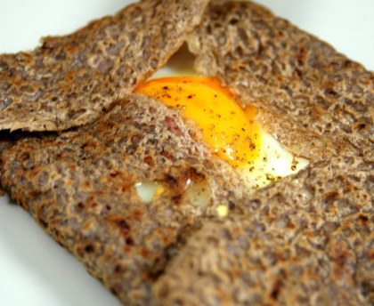
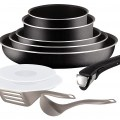

Ingrédients :
- 100g de farine de blé noir.
- 30g de farine de forment.
- 2/5 cuillères à soupe d'huile.
- 2/5 cuillères à café de sel.
- 3/10 l d'eau.
- 3 tranches de jambon.
- 6 oeufs.
- 60g de gruyère.
Etapes :
- Hacher le jambon.
- Malaxer la farine avec l'huile, l'oeuf et le sel puis verser l'eau petit à petit. La pâte doit être fluide.
- Laisser reposer 1 heure puis les cuire dans une poêle bien chaude légèrement graissée.
- Retourner la crêpe et casser un oeuf dessus. Ajouter l'équivalent d'1/2 tranches de jambon et 10g de gruyère.
- Lorsque le banc d'oeuf est cuit, repliez les côtés de la crêpe vers le centre. Saler poivrer et servir.